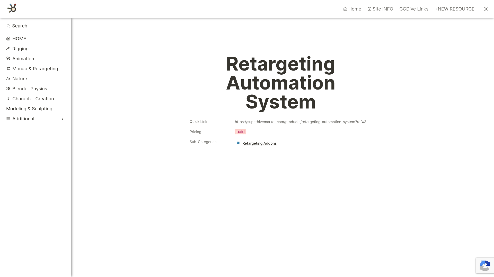

Retargeting Automation System 是一款付費的 Blender 外掛，透過 Superhive Market (原 Blender Market) 販售。定位為自動化的 Mocap Retargeting 方案，旨在簡化並自動化 motion capture 動畫的 retarget 流程。
根據 80.lv 近期報導（2026年6月），由 Pro Constantinou ("Good Good") 開發的 retargeting 工具強調了一個核心理念：更好的 retarget 品質來自於在 retarget 前先匹配來源/目標骨架的 hip 位置和肢體比例。
解決的問題：

Retargeting Automation System — 動畫重定向自動化展示
| 功能 | 說明 |
|---|---|
| 自動化 Retarget | 減少手動設定步驟的自動化 retarget 流程 |
| Hip Alignment | 自動對齊來源/目標骨架的 hip 位置 |
| Limb Proportion Matching | 匹配肢體比例以減少滑動和彈跳 |
| Foot Sliding Reduction | 透過骨架比例匹配從源頭減少腳步滑動 |
| Ground Contact | 改善接地效果 |
| Batch Processing | 自動化批次處理（推測） |
開發者 Pro Constantinou 的方法論：
> 「更好 mocap retarget 的關鍵是在匹配其餘姿勢之前，先將目標骨架的 hip 位置和肢體比例與來源匹配。Hip 與腿/脊椎之間最微小的相對位置差異都會造成嚴重的肢體滑動或彈跳，讓角色無法感覺腳踏實地。」
方法論步驟：
| 傳統 Retarget | 本工具方法 | |
|---|---|---|
| 流程 | 直接映射骨骼旋轉 | 先匹配比例再映射 |
| Hip 處理 | 忽略比例差異 | 主動對齊 Hip |
| 肢體 | 直接旋轉拷貝 | 縮放匹配+旋轉 |
| 滑步處理 | 事後修正 | 源頭預防 |
| # | 資源 | 連結 |
|---|---|---|
| 1 | 80.lv 報導（含介紹影片） | https://80.lv/articles/try-this-new-mocap-retargeting-tool-for-blender |
| 2 | CGDive 工具頁 | https://addons.cgdive.com/tools/retargeting-automation-system |
| 3 | Superhive Market 產品頁 | https://superhivemarket.com/products/retargeting-automation-system |
| 項目 | 內容 |
|---|---|
| 價格 | 付費（Superhive Market，確切價格需查看產品頁） |
| 授權 | 商業授權 |
| 平台 | Blender |
| 販售平台 | Superhive Market (原 Blender Market) |
| 開發者 | Pro Constantinou ("Good Good") |
| 發佈時間 | 2026 年（較新） |
| 面向 | 評估 |
|---|---|
| 問題對應 | ✅ Kimodo 動作最大痛點就是腳步滑動，本工具從源頭解決 |
| 方法論 | ✅ Hip alignment 對 AI 生成動畫特別有效（AI 骨架比例可能不精確） |
| 品質 | ✅ 理論上比純旋轉映射品質更高 |
| 批次 | ⚠️ 未確認批次處理能力 |
| 驗證 | ⚠️ 較新工具，需實際測試 |
Kimodo BVH → Blender Import
→ Retargeting Automation System ← 本工具
- 自動分析 Kimodo 骨架 vs 目標角色比例差異
- Hip alignment
- Limb proportion matching
- Retarget（已含接地優化）
→ Export FBX
→ 遊戲引擎
[Kimodo AI 生成 BVH]
↓
方案 A（品質優先）：
[Retargeting Automation System] ← 本工具
- 比例匹配 + 自動 retarget
- 內建接地優化
- 減少後處理需求
↓
[少量手動修正]
↓
[Export]
方案 B（速度優先/免費方案）：
[BVH Retargeter] → [Foot Locker] → [Export]
核心價值：
不確定因素：
建議：